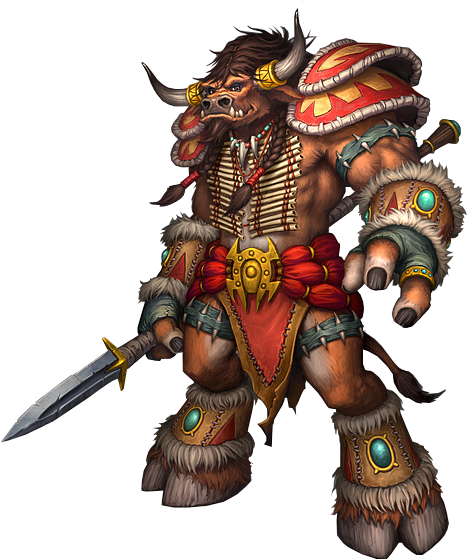

Tauren
The peaceful tauren, known in their language as the Shu'halo, are ancient inhabitants of Kalimdor who strive to preserve the balance of nature at the request of their goddess, Mother Earth. Until recently, the tauren lived as nomads scattered across the Barrens, hunting the great kodos of the arid region.